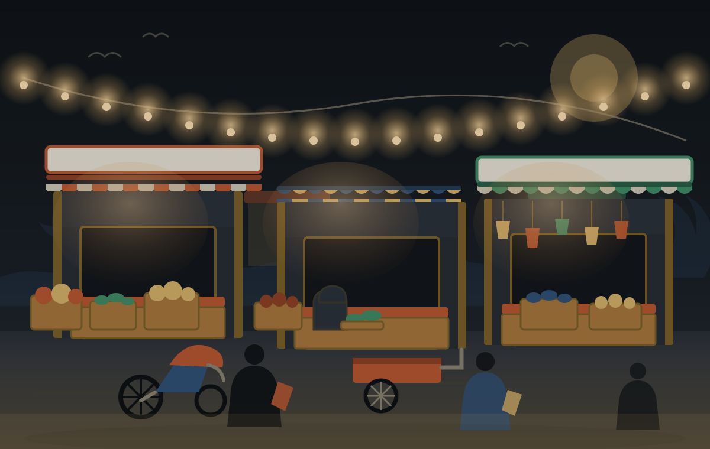

Listings
Listings a source
places on a map.
Only the listings whose position came from a public directory can be ordered by distance. The rest are in the guide without one until somebody checks them at the shopfront.
Nearest first
Placed on a map by a source.
Each card opens that listing in the guide. A badge of “Needs confirmation” means the file has no source that puts the shop at a checked door — it is not a judgement on the shop.
